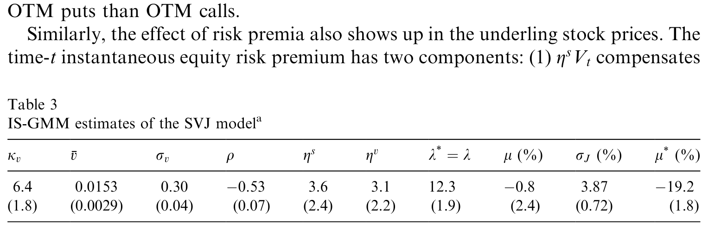
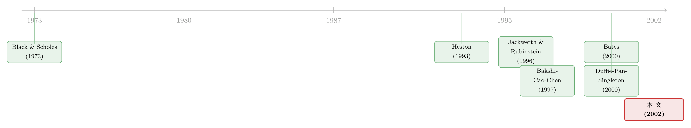

期权的『微笑』里，藏着投资者对崩盘的恐惧
本文读的是 Pan (2002, Journal of Financial Economics)：把 S&P 500 指数和近价短期期权这两条时间序列【放进同一个无套利模型里一起估】，作者发现期权价格里有一块此前从未被单独称量过的「跳跃风险溢价 (jump-risk premium)」——它会随市场波动率一起起伏，市场越乱、它越高。正是这块会「看天吃饭」的溢价，既调和了现货与期权两个市场原本对不上的动态，又解释了横截面期权那道挥之不去的波动率「冷笑 (smirk)」。
1 一个对不上的账
先从一个让人不太舒服的事实说起。
如果你拿 Black-Scholes 模型去看标普指数期权，会发现一件怪事：期权价格里「内含」的那个波动率，常年偏高——高到用事后真正实现的现货波动率根本兜不住。Jackwerth 和 Rubinstein (1996) 早就记下了这笔账：期权市场报出来的波动率，比现货市场最终兑现的要大。换句话说，期权「太贵」了。
为什么贵？最自然的解释是：期权价格里不只装着对未来波动的预期，还装着一块风险溢价 (risk premium)——投资者为了规避某种额外的风险，愿意多付的钱。
接着，一个自然的问题是：这块溢价，到底是为「哪一种」风险付的？
标普指数的收益率，至少同时被三种性质迥异的风险因子推着走：(1) 连续的扩散型价格冲击 (diffusive price shocks)，就是布朗运动那一份；(2) 偶发的价格跳跃 (price jumps)，崩盘那种；(3) 波动率本身的随机变动，即随机波动率 (stochastic volatility)。
过去的文献，几乎只盯着前两种里的「波动率风险」做文章（Guo, 1998；Benzoni, 1998；Bakshi 和 Kapadia, 2001 等等，关于波动率风险被定成负价格这件事，可参见《「买了保险，注定亏钱」：从一份对冲组合里，读出波动率的负价格》）。但有一种风险的价格，在这篇论文之前，从来没有人单独称量过——
跳跃风险，到底值多少钱？它的定价，和扩散风险一样吗？
这就是 Pan (2002) 要回答的问题。
2 真正关键的一步：把两个市场放进同一个模型一起估
要回答「跳跃风险的价格」，光看现货不行，光看期权也不行。
原因不难想：现货价格 \(S\) 走的是真实测度 (physical measure, \(P\)) 下的动态——它告诉你跳跃多久来一次、平均跳多大；而期权价格反映的是风险中性测度 (risk-neutral measure, \(Q\)) 下的动态——它把投资者的恐惧也一并折进去了。风险的「价格」，恰恰就藏在 \(P\) 和 \(Q\) 这两套动态的差里。所以你必须同时握住现货和期权两条数据，让它们互相对质。
这种「联合估计」的想法，文献里早有人呼吁，但真正落地是近些年的事。非参数的路子，Aït-Sahalia 等 (2001) 把现货和期权各自估出的风险中性密度拿来比对；参数化的路子，Chernov 和 Ghysels (2000) 用联合数据去估 Heston (1993) 模型。
但真正关键的一步，在于 Pan 设计了一套叫 「隐含状态」广义矩估计 (implied-state GMM, IS-GMM) 的办法。
它的巧妙之处是这样的：模型里有一个谁也看不见的状态变量——瞬时波动率 \(V_t\)。直接拿期权价格 \(C\) 去做 GMM，会被期权定价公式的非线性搞得一团糟。Pan 的做法是反过来：给定一组待估参数 \(\Psi\)，用当期的现货价 \(S_t\) 和一只近价短期期权价 \(C_t\)，从期权定价公式里反解出一个「期权隐含」的波动率 \(V_t^{\Psi}\)。
一旦把看不见的 \(V\) 换成了能算出来的 \(V_t^{\Psi}\)，剩下的就好办了：状态变量 \((\ln S, V)\) 具有仿射 (affine) 结构，其联合条件矩生成函数有闭式解，于是能写出一大堆矩条件，照常做 GMM。唯一的区别，是其中一个状态变量是「随参数变动」的——这就是「隐含状态」四个字的由来。
直觉上，这一步等于让现货市场和期权市场每天「对一次表」：模型每挑一组参数，就要求由期权倒推的波动率 \(V_t^{\Psi}\)，能和现货收益的实际波动在统计上自洽。对不上，就说明参数错了——而风险溢价，正是让它们对得上的那把钥匙。
3 模型：三种风险，三种价格
这一节我们把模型摊开讲。Pan 采用的是 Bates (2000) 的设定——它在 Heston (1993) 随机波动率模型之上，加了一个状态依赖的跳跃。
3.1 真实测度 \(P\) 下的数据生成过程
股价 \(S\) 服从
$$ dS_t = \big(r_t - q_t + \eta_s V_t + \lambda V_t(\mu - \mu^\star)\big)\, S_t\, dt + \sqrt{V_t}\, S_t\, dW_t^{(1)} + dZ_t - \mu\, S_t\, \lambda V_t\, dt $$
波动率 \(V\) 自成一个「平方根 (square-root)」过程：
$$ dV_t = \kappa_v(\bar v - V_t)\, dt + \sigma_v \sqrt{V_t}\Big(\rho\, dW_t^{(1)} + \sqrt{1-\rho^2}\, dW_t^{(2)}\Big) $$
逐项看：\(V\) 以速率 \(\kappa_v\) 向长期均值 \(\bar v\) 回归，波动系数为 \(\sigma_v\)；\(\rho\) 是价格冲击与波动率冲击的相关系数，它取负值，正好捕捉「股票跌、波动涨」这个老生常谈的杠杆效应 (Black, 1976)。
跳跃藏在纯跳过程 \(Z\) 里。它有两个零件：随机的跳跃时点和随机的跳跃幅度。跳跃事件按一个状态依赖的强度 (state-dependent intensity) \(\lambda V_t\) 到来——注意这里是 \(\lambda V_t\)，不是常数。这是全文的「七寸」：
强度被写成 \(\lambda V_t\) 而非一个常数 \(\lambda_0\)，意味着市场越波动，跳跃越频繁。为保持模型简洁，Pan 干脆把常数项扔掉了（这个「常数项为零」的约束后文会被正式检验）。正是这个线性设定，让跳跃风险溢价也能「看天吃饭」。
给定第 \(i\) 次跳跃发生，对数股价跳一个 \(U_i^s \sim N(\mu_J, \sigma_J^2)\)，于是平均相对跳幅 \(\mu = \mathbb{E}(e^{U^s}-1) = e^{\mu_J + \sigma_J^2/2} - 1\)。式中最后那项 \(\mu S_t \lambda V_t\, dt\) 是跳跃过程的补偿子，扣掉它，跳跃才不会污染漂移。
3.2 风险中性测度 \(Q\) 下的动态
换到 \(Q\) 测度，同样两条 SDE：
$$ dS_t = (r_t - q_t)\, S_t\, dt + \sqrt{V_t}\, S_t\, dW_t^{(1)}(Q) + dZ_t^{Q} - \mu^\star\, S_t\, \lambda V_t\, dt $$
$$ dV_t = \big(\kappa_v(\bar v - V_t) + \eta_v V_t\big)\, dt + \sigma_v \sqrt{V_t}\Big(\rho\, dW_t^{(1)}(Q) + \sqrt{1-\rho^2}\, dW_t^{(2)}(Q)\Big) $$
把 \(P\) 和 \(Q\) 摆在一起对比，三种风险怎样被定价就一目了然了：
- 扩散型收益风险：\(P\) 的漂移里多出一项 \(\eta_s V_t\)，\(Q\) 里没有。\(\eta_s\) 就是这块「布朗冲击」的风险价格，类似 CAPM 里的风险—收益权衡。
- 波动率风险：\(Q\) 测度下 \(V\) 的漂移多了一项 \(\eta_v V_t\)。\(\eta_v > 0\) 时，波动率在 \(Q\) 下平均增速更快，于是期权更贵。
- 跳跃风险：关键在跳幅。\(P\) 下平均跳幅由 \(\mu\)（即 \(\mu_J\)）决定，\(Q\) 下变成 \(\mu^\star\)（即 \(\mu_J^\star\)）。让 \(\mu^\star \ne \mu\)，就给「跳幅不确定性」开了一块溢价。
这里有个诚实的取舍：跳跃风险其实有两层——跳得多频繁（timing）和跳得多大（size）。Pan 出于识别上的顾虑，假定跳跃强度系数在两个测度下相同（\(\lambda^\star = \lambda\)），把所有跳跃溢价都「人为地」塞进跳幅这一项 \(\mu - \mu^\star\) 里。于是，补偿跳幅不确定性的瞬时超额收益就是 \(\lambda V_t(\mu - \mu^\star)\)。
3.3 一个方程看懂三种溢价
把现货收益里的两块风险溢价拎出来，整篇文章的经济学就压缩在这一个表达式里：
读这个式子的方式是：第一项是「老实人」的报酬，跟波动率成比例；第二、三项合起来才是这篇论文的主角——跳跃风险溢价。它由两块相乘：一块是「跳得多勤」\(\lambda V_t\)，因为强度挂着 \(V_t\)，所以它会随市场波动起伏；另一块是「投资者多怕这一跳」\(\mu - \mu^\star\)。两者相乘，便得到一个会随市场情绪呼吸的、状态依赖的跳跃溢价。
最后是期权定价。借助 \((\ln S, V, r, q)\) 的仿射结构和变换法 (Duffie, Pan 和 Singleton, 2000)，欧式看涨期权有半闭式解：
$$ C_t = \mathbb{E}^{Q}_t\Big[\exp\Big(-\int_t^T r_u\, du\Big)(S_T - K)^+\Big] = S_t\, f\Big(V_t;\, \Psi;\, r_t, q_t;\, \tau;\, \tfrac{K}{S_t}\Big) $$
正是这个 \(f\)，让 IS-GMM 能从 \(C_n = S_n f(V_n^{\Psi};\Psi)\) 里把隐含波动率 \(V_n^{\Psi}\) 反解出来。整套待估参数是 \(\Psi = [\kappa_v, \bar v, \sigma_v, \rho, \lambda, \mu, \sigma_J, \eta_s, \eta_v, \mu^\star]\)。
4 反转：是跳跃，不是波动率，撑住了这盘棋
模型搭好，接下来就是让数据说话。Pan 的策略是「步步紧逼」，一个模型一个模型地试。
第一步，只给波动率风险定价。 把 Heston (1993) 模型（含一个波动率风险溢价 \(\eta_v\)）拿去拟合现货与期权的联合序列 \(\{S_t, C_t\}\)。结果是：波动率风险溢价显著，拟合也有改善——但模型整体仍被联合数据拒绝。更糟的是，这样估出来的波动率溢价，会让 \(V\) 在 \(Q\) 测度下变成一个「爆炸」的过程，从而把长期期权严重定高。一个为了救短期期权而把长期期权弄垮的模型，显然不对。
于是反转出现。 第二步，改用 Bates (2000) 模型，引入跳跃和那个状态依赖的跳跃溢价。结果截然不同：跳跃风险溢价显著为正；模型不再被联合数据拒绝；而且估出的溢价水平不会扭曲长期期权。
第三步，把两种溢价同时放进去让它们竞争，结论干脆利落：状态依赖的跳跃风险溢价，远远盖过了波动率风险溢价。 Table 3 把这两块溢价的估计摆在一起，二者都为正，但分量天差地别。

Table 3: shows that both types of risk premia are estimated to be positive. The
到这里，故事其实已经讲完了一半：在调和现货与期权动态这件事上，真正干活的是跳跃溢价，而不是大家此前盯着看的波动率溢价。
5 再下一城：横截面期权的「冷笑」
但 Pan 没有就此收手。她手里还攥着一张更难的考卷。
前面的估计，自始至终只用了「一只现货 + 一只近价短期期权」这两条时间序列。可每一天，市场上还摆着一整排不同行权价、不同到期日的期权。如果把那些完全没参与估计的期权也拿出来对一遍，模型扛得住吗？
扛住了，而且出人意料地好。用只从 \(\{S_t, C_t\}\) 这一对序列里估出来的参数，Bates (2000) 模型能很好地复制横截面期权数据，尤其是那道随时间变化的波动率「冷笑」——即深度虚值看跌期权的隐含波动率系统性地高于平价期权，画出来像一张往下撇的嘴。
撑起这道冷笑的，又是那个状态依赖的跳跃溢价：在真实世界里只是「小幅向下」的跳跃，在风险中性世界里被感知为「显著更负」。换句话说——
波动率「冷笑」的成因，主要是投资者对大幅负向价格跳跃的恐惧。Bakshi 等 (1997) 和 Bates (2000) 也得到过类似结论，但他们是直接拿整条横截面期权去拟合「风险中性」那一半；Pan 的不同在于，她只用一只现货和一只期权的时间序列，就把这块恐惧给「钓」了出来，并进一步指出：这种对跳跃的恐惧，不只反映在深度虚值看跌期权里，连近价期权里都有它的影子。
（关于「罕见但可怕的事件如何被折进期权微笑」这条更偏均衡建模的思路，可参见《罕见，所以可怕：把「算不准的概率」写进期权的微笑里》；而「从期权倒推出的风险厌恶为什么会咧嘴一笑」，则见《为什么从期权里「读」出来的风险厌恶，会咧嘴一笑？》。）
6 文献脉络
把这条线索捋一捋，会看到一段相当清晰的演进。
起点自然是 Black 和 Scholes (1973)——常数波动率、无跳跃的完备市场。它优雅，但解释不了股票收益的「肥尾」，也画不出横截面期权的「冷笑」。
第一次松绑是 Heston (1993)，把波动率放成一个平方根随机过程，并给出闭式期权定价。它捕捉了波动率的随机性和杠杆效应，却仍解释不了肥尾与冷笑（Andersen 等, 1998；Bakshi 等, 1997）。
第二次松绑是加跳跃。Bakshi、Cao 和 Chen (1997) 与 Bates (2000) 用横截面期权拟合，确认了跳跃对刻画冷笑的重要性。与此同时，方法论上 Duffie、Pan 和 Singleton (2000) 把「仿射跳跃扩散」的变换定价法做成了通用工具，为这类模型的解析处理铺好了路。
联合估计的浪潮随后兴起：Aït-Sahalia 等 (2001) 走非参数路线，Chernov 和 Ghysels (2000) 走参数路线，都试图让现货与期权两个市场互相校验。

本文所处的位置，是在这两股潮流的交汇点上：它既站在 Bates (2000) 的模型肩上，又用 IS-GMM 把「现货 + 期权」的联合估计做成了一件解析上可控的事，从而第一次单独称量出跳跃风险的价格，并指出它的状态依赖性才是调和两个市场、解释冷笑的主角。
7 评论与延伸（Q&A + 研究方向）
(a) 几个可能的疑问
Q：跳跃风险溢价和波动率风险溢价，到底差在哪？
差在「定价的是什么风险」。波动率溢价 \(\eta_v\) 补偿的是连续的波动率变动（\(V\) 的随机漂移），而跳跃溢价 \(\lambda V_t(\mu - \mu^\star)\) 补偿的是离散的、突发的崩盘式跳幅不确定性。Pan 的核心发现就是：在标普期权里，后者远比前者重要，而且只有后者不会把长期期权定价搞坏。
Q：「状态依赖」到底关键在哪？换成常数强度不行吗？
关键在于它让溢价能「看天吃饭」。强度写成 \(\lambda V_t\)，意味着市场越乱、跳跃越勤、溢价越高——这恰好对应「投资者在动荡期更怕崩盘」的直觉。Pan 还正式检验了「强度无常数项」这个约束；为了调和现货与期权动态，起主导作用的正是这个状态依赖项，而非常数项。
Q：把跳跃时点溢价和跳幅溢价合并（令 \(\lambda^\star=\lambda\)），会不会把结论带偏？
这是出于识别的务实之举：单靠标普指数数据，跳跃强度 \(\lambda\) 和平均跳幅 \(\mu\) 在 GMM 下很难分别钉死。合并之后，所有跳跃溢价都被算进跳幅项 \(\mu-\mu^\star\)。论文在第 5.2 节放松了这一约束去衡量两者的相对重要性，算是对稳健性的一个交代——但严格区分二者，依然是这类研究的老大难。
Q：这和「peso 问题」怎么区分？
区分不开，但二者本质不同。Jackwerth 和 Rubinstein (1996) 提出的「peso」成分，说的是虚值看跌期权之所以贵，是因为某种尚未兑现的极端事件的客观概率；而风险溢价的解释强调的是投资者对这种事件的厌恶。由于跳跃本就稀少、样本期又不长，实证上很难把两者掰开——这是论文坦承的局限。
Q：IS-GMM 比「直接对期权做 GMM」强在哪？
强在它绕开了期权定价的非线性。直接拿 \(C\) 做估计，\((S,C)\) 的联合分布会很难缠；而把 \(V\) 用期权反解出来后，作者就能直接利用 \((\ln S, V)\) 的仿射结构——它的联合条件矩生成函数有闭式解，矩条件唾手可得。代价是其中一个状态变量「随参数变动」，需要相应地修正大样本性质（见附录 C）。
Q：模型有没有明显的硬伤？
有两处作者自己点了名。一是波动率本身不能跳（而 Eraker 等, 2000 发现波动率跳很重要）；二是平方根设定可能让波动率「涨得不够快」（Jones, 1999）。论文在第 5.4 节用诊断检验考察了这些局限对跳跃溢价结论的影响。
(b) 几个可能的研究问题与提案
1. 把这套「双市场对质」搬到公司债 / 信用市场。
【经济故事】公司债利差里同样既有违约的「跳跃」成分，也有流动性与风险溢价成分。能不能像 Pan 对待股指那样，把单个发行人的股价（或 CDS）与其债券价格放进同一个跳跃扩散模型，单独称量「违约跳跃风险」的价格？ 【可行性】中。CDS + 股票 + 债券的高频联合数据在 TRACE 与 Markit 时代是可得的；难点在于公司层面的跳跃稀少、识别更弱，且需要处理信用市场的流动性摩擦。
2. 跳跃溢价的状态依赖，能不能换成「外资持有人结构」来驱动？
【经济故事】Pan 让跳跃强度挂在波动率 \(V_t\) 上；一个自然的延伸是问：当某类边际投资者（如外资）占比变化时，跳跃溢价是否随之改变？这把「谁在定价崩盘恐惧」这个问题摆上了台面。 【可行性】中至低。需要把投资者持有结构（如 13F、跨境持仓数据）与期权隐含的跳跃溢价对齐；识别上要小心持有结构的内生性，最好找一个外生的持有人冲击做工具。
3. 用 IS-GMM 的「隐含状态」思想去估流动性的影子价格。
【经济故事】Pan 把看不见的波动率从期权里反解出来。同理，市场流动性也是个看不见的状态变量——能不能从「同一资产、不同流动性档位」的价格里把它隐含地反解出来，再估它的风险价格？ 【可行性】中。公司债的「同发行人多券种」结构（不同剩余期限、不同发行规模）天然提供了横截面，可用来识别流动性状态；难在为流动性写一个解析可控的定价核。
4. 跳跃溢价的状态依赖在危机里是否「断裂」？
【经济故事】Pan 的样本相对平静。2008 与 2020 这种极端时段，\(\lambda V_t\) 的线性设定可能不够——溢价或许会非线性地飙升，甚至出现「波动率自己也跳」的情形。 【可行性】高。VIX 衍生品、标普期权的长样本数据齐备，可直接检验线性强度设定在危机窗口是否失效（关于危机如何掀翻各种「均值回归」式的波动率模型，可参见《恐慌指数也能定价：当 2008 把所有「均值回归」模型一起按在地上摩擦》）。
我的判断
这篇论文的贡献，我认为有两层，且都立得住。
方法上，IS-GMM 是个漂亮的「以退为进」：与其在期权的非线性里硬刚，不如把看不见的波动率反解出来，退回到状态变量自身的仿射世界里做矩估计。这个思路的可迁移性，比它解决的具体问题更值钱。
实质上，它第一次把「跳跃风险的价格」从「波动率风险的价格」里干净地剥离出来，并给出一个反直觉却有力的结论：撑住整盘棋、画出那道冷笑的，是状态依赖的跳跃溢价，而非大家长期盯着的波动率溢价。更难得的是稳健性——只用一对时间序列估出的参数，竟能外推解释整条横截面期权。这种「样本外的胜利」，在结构估计的文章里并不多见。
对识别，我有两点保留。其一，是作者自己也承认的「peso 问题 vs. 风险溢价」之争：在一个跳跃稀少、样本不长的世界里，「概率本就如此」和「投资者过度厌恶」在统计上几乎是同一回事，分不开就难言因果。其二，是把跳跃时点溢价并入跳幅溢价（\(\lambda^\star=\lambda\)）这一刀——它让模型可估，却也意味着我们读到的「跳跃溢价」是个混合体，其内部构成只能靠额外假设去拆。
后续我最想看到的，是把这套框架放到更长、含危机的样本里，去检验那个 \(\lambda V_t\) 的线性强度设定。我的直觉是，真正的崩盘恐惧在尾部是高度非线性的——而那，恰恰是 Pan 这篇奠基之作留给后人最诱人的一道缝隙。
参考文献
- Bakshi, G., Cao, C., Chen, Z. (1997). Empirical performance of alternative option pricing models. Journal of Finance 52, 2003–2049.
- Bates, D. (2000). Post-’87 crash fears in S&P 500 futures options. Journal of Econometrics 94, 181–238.
- Black, F. (1976). Studies of stock price volatility changes. Proceedings of the 1976 Meetings of the Business and Economics Statistics Section, American Statistical Association, 177–181.
- Black, F., Scholes, M. (1973). The pricing of options and corporate liabilities. Journal of Political Economy 81, 637–654.
- Chernov, M., Ghysels, E. (2000). A study towards a unified approach to the joint estimation of objective and risk neutral measures for the purpose of options valuation. Journal of Financial Economics 56, 407–458.
- Duffie, D., Pan, J., Singleton, K. (2000). Transform analysis and asset pricing for affine jump-diffusions. Econometrica 68, 1343–1376.
- Heston, S. (1993). A closed-form solution of options with stochastic volatility with applications to bond and currency options. Review of Financial Studies 6, 327–343.
- Jackwerth, J.C., Rubinstein, M. (1996). Recovering probability distributions from option prices. Journal of Finance 51, 1611–1631.
- Pan, J. (2002). The jump-risk premia implicit in options: Evidence from an integrated time-series study. Journal of Financial Economics 63, 3–50.